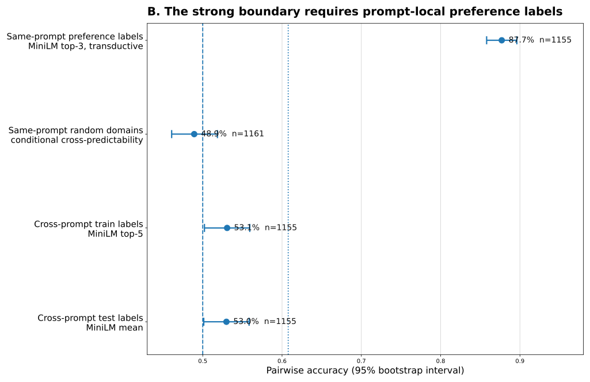

Same prompt. Specific exemplars. Human preference labels. Transductive evaluation.
Creative search / working manuscript / July 2026
The Selector Remains Human
Models made creative possibilities abundant. They did not supply an independent reason to value one possibility over another. This research tests that missing layer—and finds that human-shaped context, not a generic mechanical proxy, carried the useful signal.
The 87.7% result shown below is a transductive, same-prompt probe built from other test labels. It is evidence of a strong local boundary—not a transferable creative evaluator.
MiniLM against same-prompt preference pools · n=1,155
Averaging the same local domain erased the usable boundary.
Preference-labeled domains did not transfer into a general selector.
Evidence / what the experiments changed
The metric was not the miracle. The comparison set was.
A conditional language-model readout initially looked like a strong compression-based selector. A crossed operator control changed the interpretation: directional MiniLM performed better on the identical rows, while centroid pooling failed.
The strong boundary requires prompt-local preference labels.
Randomizing labels within the same prompt collapses to chance. Moving real preference labels across prompts also collapses toward chance. The result is local and label-defined, not a free-standing value function.

The surface-format baseline is 60.8%. The 87.7% row is not comparable to an inductive reward-model score because its domains contain labels from other held-out test items.
Framework / anatomy of a selector
Creativity as search without a writable value function.
This is an engineering model, not a universal definition: a generator proposes; a selector supplies value-ordering. The selector is defined by where its authority comes from and how it compares—not by whether it emits a score.
01 / Decorrelation
Independent errors
The selector is useful when its mistakes are not the generator’s mistakes. Judging a realized artifact creates some informational independence even when architecture is shared.
02 / Unfrozenness
Alive at the frontier
A learned judge freezes yesterday’s labels. Creative value moves. Frontier decisions require a source of judgment that can still change with the audience, context, and moment.
03 / Grounding
Where order comes from
The world can ground proofs, compilers, and win conditions. Internal proxies measure features. In open-ended aesthetics, minds remain the tested source of value-ordering.
04 / Reference set
The contrast pool matters
In these experiments, constructing what a candidate was compared against mattered more than the readout family. Human-shaped pools carried the strongest signal; generic domains did not.
05 / Form
Specific and directional
Candidate-to-exemplar relations preserved structure that a pooled centroid destroyed. Taste behaved more like a set of particular comparisons than a single prototype.
06 / Locality
Always for a situation
The prompt-local boundary was strong; the transferred boundary was not. A selector is indexed to a property, population, context, and time—not assumed to be a global aesthetic oracle.
The practical consequence
Human work narrows—and moves upward.
The result is not that people must judge every output. It is that automation did not remove the source of value. Human contribution relocates from per-candidate labor to the conditions under which candidates are judged.
Construct the reference set
Choose the exemplars, contrasts, and specific comparisons that constitute a local taste.
Adjudicate the frontier
Intervene where a frozen proxy is least reliable and novelty makes automation uncertain.
Make high-leverage commitments
Set premises, direction, and path-dependent decisions that downstream execution inherits.
Certify non-drift
Check that the machine’s ordering still resembles the intended human one.
Machine work: generation, diversity, revision execution, inexpensive readout, and the bulk of low-novelty scoring.
Scientific boundary / evidence before mythology
A useful negative—not an impossibility proof.
The framework is a disciplined interpretation of two datasets and a family of tested mechanisms. The site keeps established results, engineering implications, and open philosophical claims separate.
Established here
The tested generic proxies were insufficient.
Generic compression and surprise did not recover appraisal. The strongest LitBench boundary depended on prompt-local human labels and per-instance comparison.
Engineering implication
Invest in the conditions of judgment.
Tools should help people curate exemplars, preserve context, express disagreement, compare concrete alternatives, and monitor drift.
Not claimed
No mechanical value signal can ever exist.
The experiments reject the tested mechanisms as sufficient label-free selectors. They do not prove that every possible world-trained or population-grounded observer must fail.
Working paper / methods, controls, and reproducibility
Read the full argument.
The manuscript documents the compression hypothesis, the negative poetry result, the LitBench operator confound, the local-label boundary, crossed controls, limitations, and the exact reproduction path.